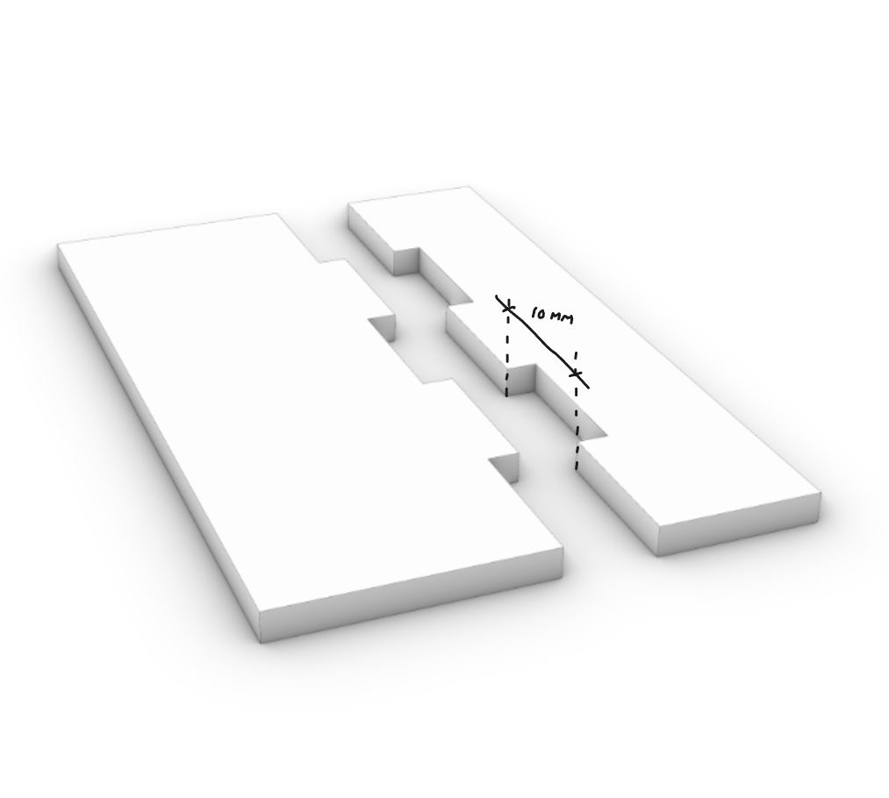
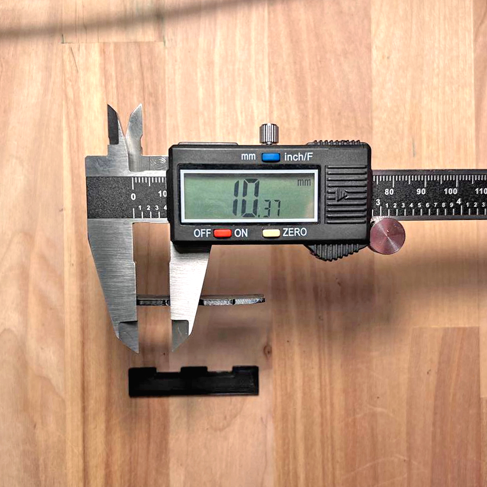
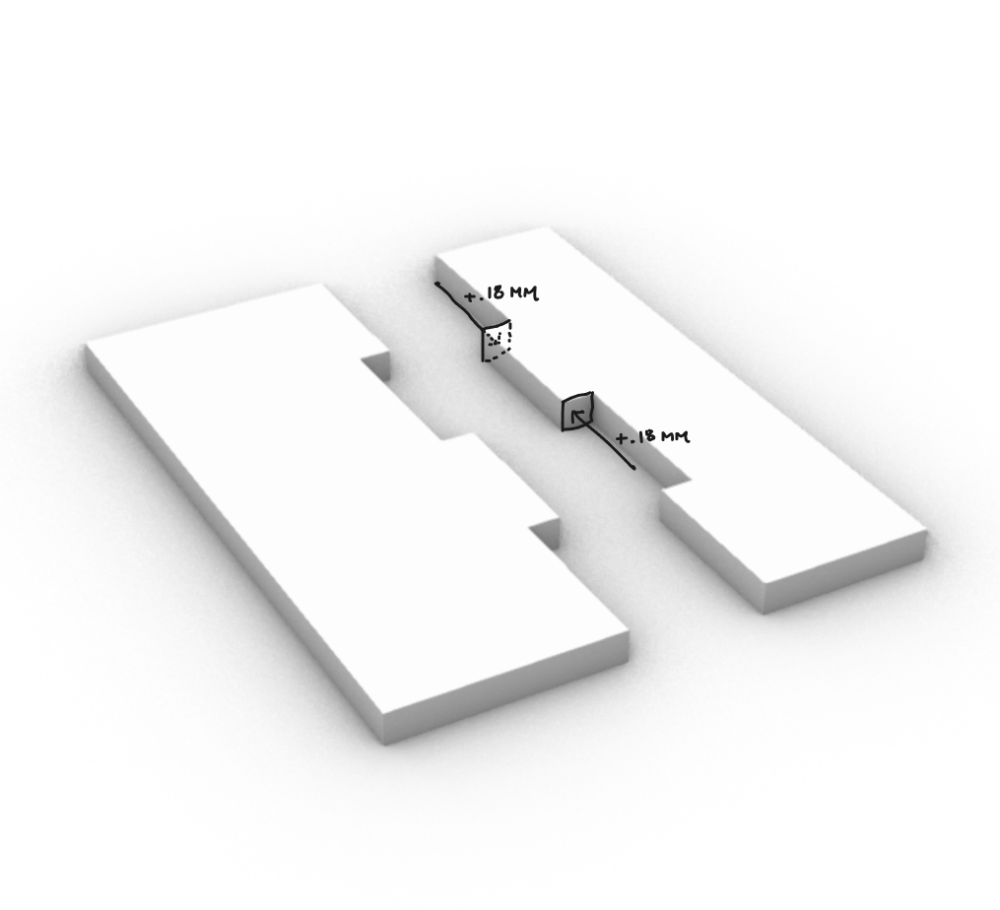
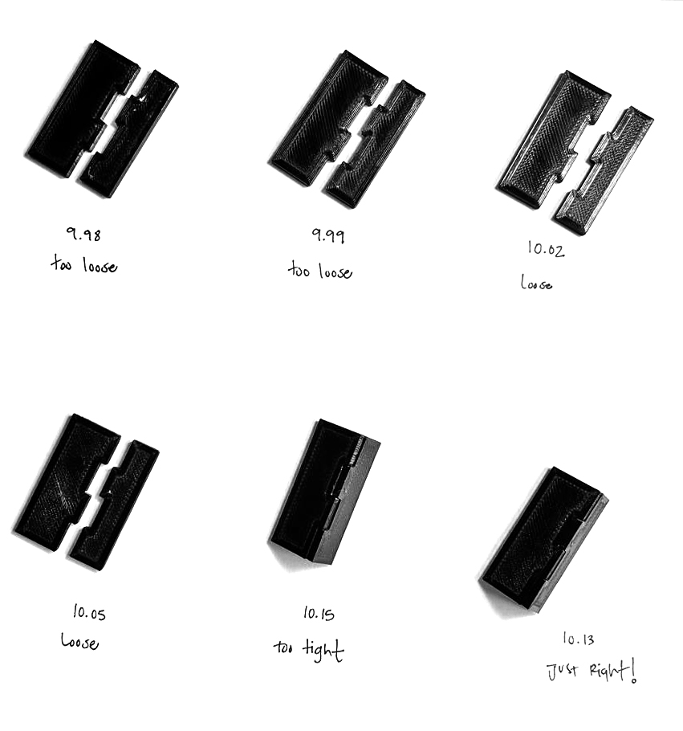
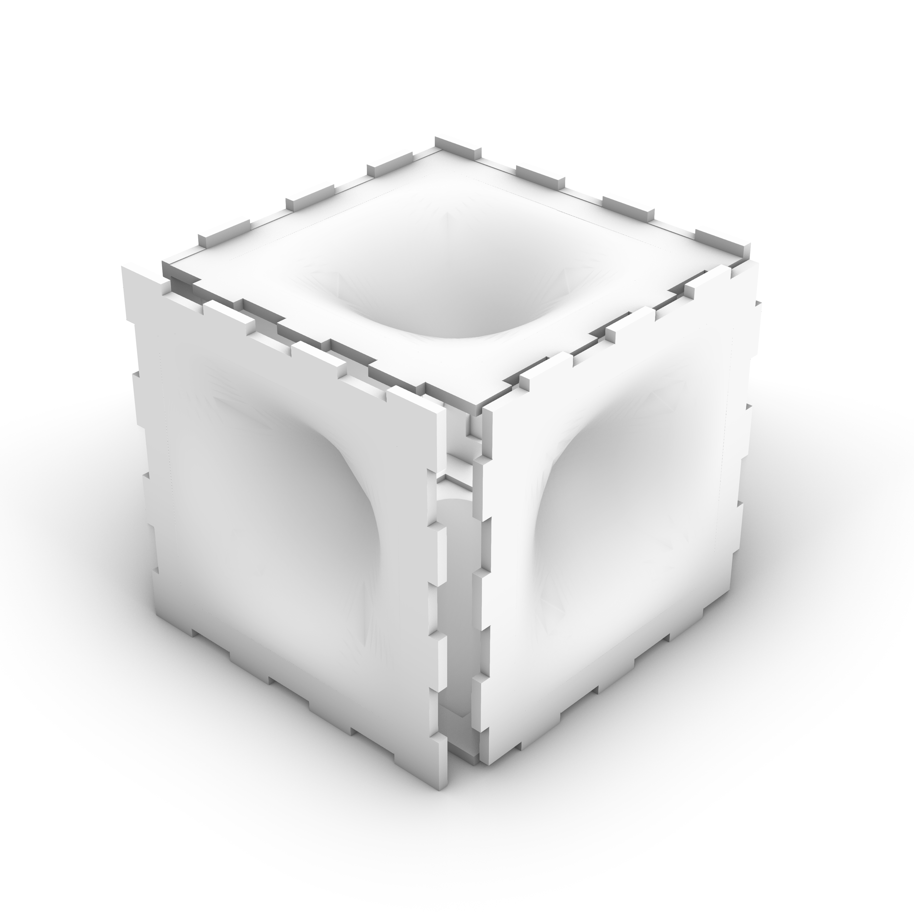
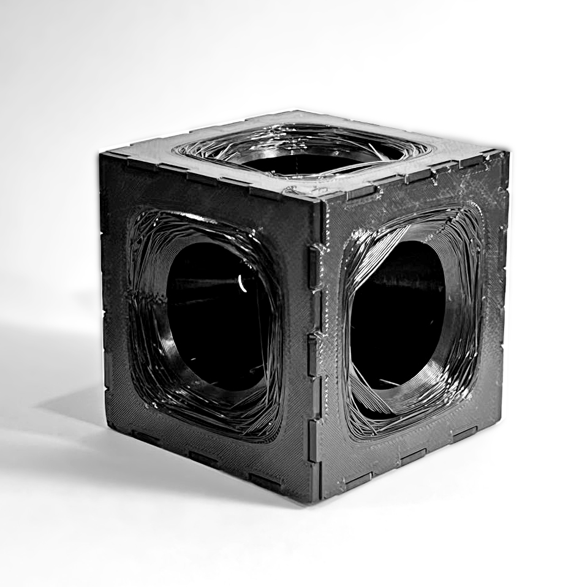
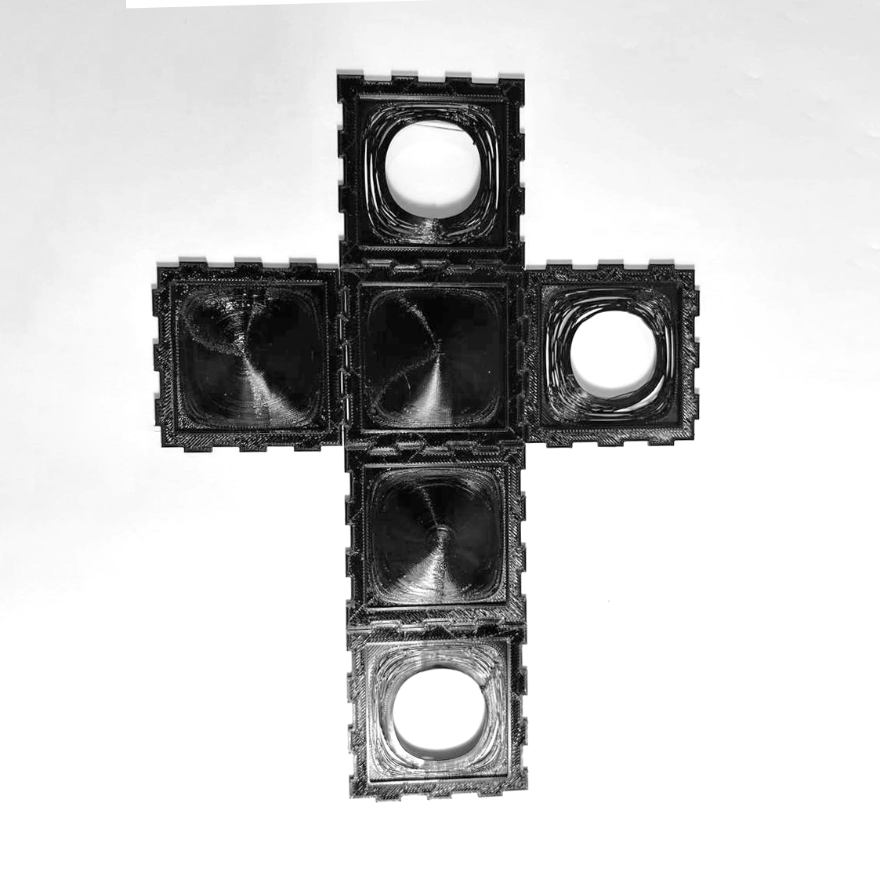

-- MAKE IT MATCH --
For this assignment, we are working with subtractive manufacturing. The ability to define how a material can be formed and cut through millin or other processes to achieve diverse results. This process requires to understand well the capabilities of the materials we are using, and the requirements of the cuts/forms we need, especially concerning depth.
Since access to a milling machine is limited by time and resources, this study will be done using 3D printing, this allows us to test the matching capabilities of the material, while allowing a few twists at the end.
-- SET UP--
To begin this process, we will use 3D printed sheets of PETG black filament. We are defining the depth to be 2 mm. and joints will have a 10 mm. width. The first step is printing a 1:1 sample of this joint and study how mu h the 3D printer expands or contracts the edges of the filament.

^ Rhino file showing the sample sheet to be printed.
-- TEST 01--
For the first iteration, we notice that our 10mm. flaps expanded to ~10.37mm.

This means we can hypotetically contract each side of a flap by .18mm. to achieve the desired 10mm. width.

However, upon printing, we can see that .18mm. was too much to be able to snug the shapes together firmly. We went through 6 more iterations attempting to find the ideal differencial between the female and the male flaps in the sheets.

-- FINAL RESULT --
For the final product, I decided to go for a cube that has vortex-like curved surfaces in the middle. As I continue experimenting with PETG, I will understand better its capabilities. For some reason, no matter what I did, I couldnt get the filament to stick vertically. But it created an interesting spider-web pattern that I decided to keep to each of the sides.



Source Files: